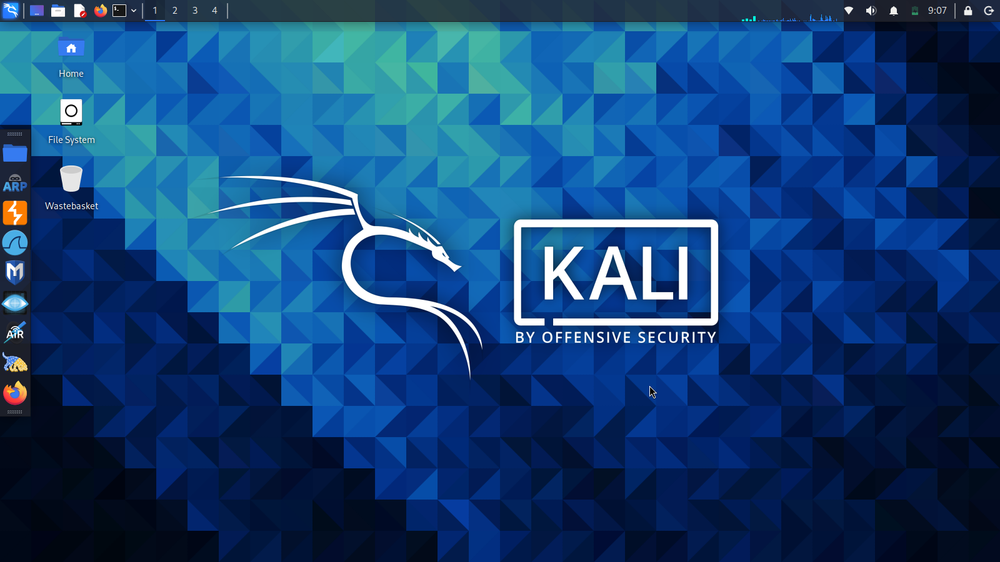
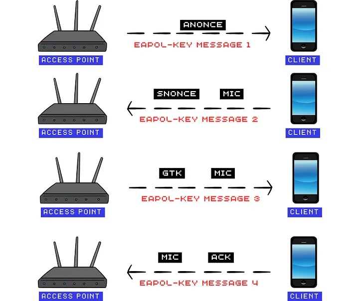
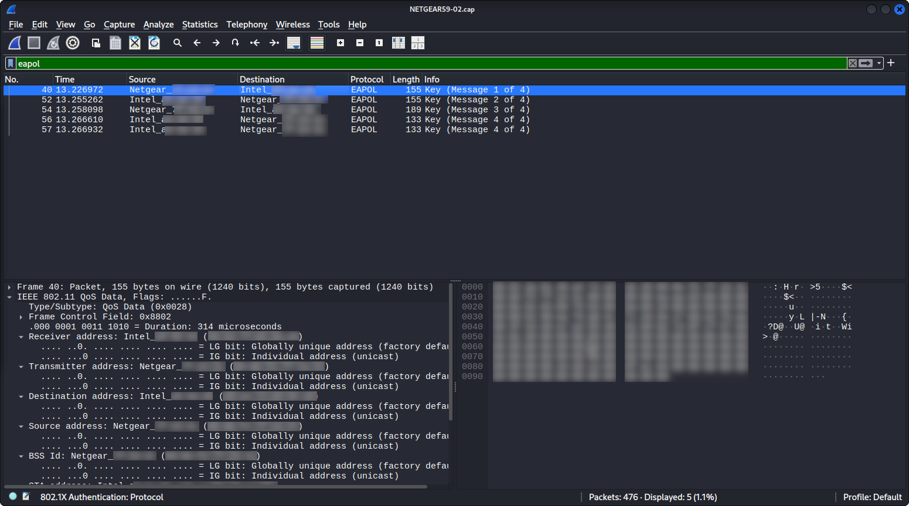

I dette forløb arbejder vi med trådløse netværk og WiFi-sikkerhed. Vi undersøger, hvordan trådløse netværk er opbygget, hvordan kryptering som WPA2 og WPA3 bruges til at beskytte data, og hvorfor sikre adgangskoder er afgørende for at forhindre uautoriseret adgang.
Forløbet tager udgangspunkt i, hvordan sikkerhed kan analyseres i kontrollerede og lovlige testmiljøer, så vi kan forstå både styrker og svagheder ved trådløs netværksbeskyttelse. Eventuelle tekniske eksempler vises udelukkende som demonstration og analyse og må ikke anvendes på rigtige netværk.
Det er vigtigt at understrege, at forsøg på at få adgang til eller manipulere med trådløse netværk uden udtrykkelig tilladelse fra ejeren er ulovligt og kan have alvorlige konsekvenser. Derfor har forløbet et tydeligt fokus på etik, lovgivning og ansvarlig brug af teknologisk viden.
Målet med forløbet er ikke at lære at angribe netværk, men at opnå forståelse for, hvordan trådløs sikkerhed fungerer, og hvordan man bedst beskytter sine egne og andres netværk. Viden om sårbarheder bruges som et redskab til at styrke sikkerhed – ikke til at udnytte den.
Lærervejledning til forløbet
Teknologier
Hardware
En computer der kan kører Python3 - Udvikleren af Flask anbefaler den nyeste version af Python. Flask supporter Python 3.9 og frem.
Eleven kan med digitale teknologier konstruere digitale artefakter, der manifesterer en ide i digitalt materiale
Eleven har viden om konstruktion med digitale teknologier og om formgivning i digitale materialer ift. en ide
Teknologisk handleevne
Programmering
Eleven kan læse og forstå programmer skrevet i et tekstbaseret programmeringssprog samt anvende et sådant til systematisk modifikation og konstruktion af programmer ud fra en problemspecifikation
Eleven har viden om metoder til at analysere og forudsige programmers opførsel samt teknikker til systematisk og trinvis udvikling af programmer
WiFi og sikkerhed
I dette forløb arbejder vi med trådløse netværk og WiFi-sikkerhed. Vi undersøger, hvordan moderne WiFi-beskyttelse som WPA2 og WPA3 er opbygget, og hvorfor adgangskoder og kryptering er afgørende for at beskytte data i et netværk.
Forløbet tager udgangspunkt i analyse af, hvordan sikkerhed kan brydes i kontrollerede og lovlige testmiljøer, så vi kan forstå, hvordan man bedst beskytter sig mod angreb. Målet er at give en praktisk forståelse af, hvordan trådløse netværk fungerer, og hvordan sikkerhedsmekanismer beskytter mod uautoriseret adgang.
Link til forløb
Scan QR-koden for at se forløbet og tage dine hackingevner til det næste niveau.
Disclaimer: Dette materiale er udelukkende udarbejdet til undervisningsformål. Forsøg på at få adgang til eller angribe netværk, som du ikke selv ejer eller har udtrykkelig tilladelse til at teste, er ulovligt. Eventuelle eksempler og demonstrationer må derfor kun anvendes i kontrollerede og lovlige testmiljøer.
Introduktion
Basis - En intro til WPA
Vi bruger WiFi hver eneste dag – derhjemme, i skolen og i det offentlige rum. Vores telefoner, computere og spil er konstant forbundet til trådløse netværk, som sender data frem og tilbage, ofte uden at vi tænker over, hvordan forbindelsen egentlig er beskyttet.
I dette forløb arbejder vi med WiFi-sikkerhed og trådløse netværk. Vi undersøger, hvordan moderne WiFi-beskyttelse som WPA2 fungerer, og hvorfor adgangskoder og kryptering spiller en afgørende rolle for at beskytte data mod uautoriseret adgang.
Ordliste:
SSID → Navnet på et trådløst netværk – det navn du ser, når du leder efter WiFi på din enhed.
ESSID → Et netværksnavn, som kan dække flere access points. Bruges ofte i større netværk, fx på en skole eller i en virksomhed. I analyseværktøjer henviser det typisk til det netværk, man undersøger.
BSSID → Den fysiske (unikke) hardwareadresse på et access point. Kan sammenlignes med et serienummer for netværksudstyret.
WPA2-PSK → En type WiFi-sikkerhed, hvor alle brugere logger på netværket med det samme kodeord. Bruges typisk i private hjem.
WPA2-EAP → En type WiFi-sikkerhed, hvor hver bruger logger ind med sit eget brugernavn og kodeord. Bruges ofte på skoler og arbejdspladser.
RADIUS → En server, der bruges til at godkende brugere, fx når man logger på et WiFi-netværk med brugernavn og kodeord. Bruges ikke kun til WiFi, men også til andre typer login.
Kernen af WPA(2) (Wi-Fi Protected Access) sikkerhedsprotokollen for trådløs internet er "the 4 way handshake" - som groft oversat betyder "det 4-vejs håndtrykket".
De fleste WiFi netværk i private hjem bruge WPA(2), hvor WPE (Wired Equivalent Privacy) tidligere blev brugt. Ved 4-vejs håndtrykket kan en klient og en router erkende overfor hinanden, at de kender "nøglen" uden egentlig at opgive en decideret nøgle.
Nøglen til WPA bliver udledet af både ESSID (navnet på netværket) og kodeordet til netværket. Dette gør det svære at gennemføre et standard "dictionary attack" - for hver password, vil nøglen stadig varierer for hver access point.
For at opfange den nødvendige data (4 way handshake), skal vi bruge en samling programmer, som samlet kaldes for Aircrack-ng Suit, til at opfange, analysere og angribe et netværk. Man skal dog bruge et WiFi NIC (Network Interface Controller) der kan sættes i "moitor mode" - normalt vil ens netværk interface controller være i det der hedder "managed mode".
Monitor mode er en tilstand, hvor et trådløst netværkskort kan opfange WiFi-trafik i området uden at være forbundet til et netværk. Det bruges til at analysere trådløs kommunikation i kontrollerede og lovlige testmiljøer.
Opsætning
Kali Linux – vores testmiljø
I dette forløb bruger vi Kali Linux som et kontrolleret testmiljø til analyse af netværkssikkerhed. Kali Linux er en Linux-distribution, der indeholder værktøjer til at undersøge og teste IT-sikkerhed.

Vi bruger systemet til at forstå, hvordan trådløse netværk fungerer, og hvordan sikkerhed kan analyseres i et lukket og lovligt miljø.
Installation og konfiguration af Kali Linux ligger uden for dette forløbs omfang. Alle aktiviteter i forløbet forudsætter et allerede etableret og kontrolleret undervisningsmiljø, hvor fokus er analyse og forståelse af netværkssikkerhed.
WiFI og USB-adapter
De fleste computere har allerede et indbygget WiFi-kort. Det fungerer fint til almindelig brug som at gå på nettet og streame video.
I dette forløb bruger vi dog en ekstern WiFi USB-adapter, fordi den giver adgang til funktioner, som det indbyggede netværkskort ofte ikke understøtter.
En ekstern adapter kan blandt andet:
arbejde mere fleksibelt med trådløse signaler
bruges til at analysere netværkstrafik mere detaljeret
skifte mellem forskellige netværkstilstande, som er nødvendige i kontrollerede testmiljøer
WiFi og interface-navne
Når en computer har mere end ét trådløst netværkskort (fx det indbyggede WiFi og en USB-adapter), får de forskellige interface-navne. For at finde ud af hvilket interface der tilhører USB-adapteren, kan man gøre følgende:
Trin 1 – Start computeren uden USB-adapteren
Tænd computeren uden at WiFi USB-adapteren er sat i
Åbn en terminal
Tjek hvilke netværksinterfaces der allerede findes
På Linux kan vi benytte iwconfig eller airmon-ng til at se status og navn for tilgængelige trådløse netværk interfaces.
ssh
~iwconfig
Outputssh
~iwconfig
lo no wireless extensions.
eth0 no wireless extensions.
wlan0 IEEE 802.11 ESSID:"NoNameRouter"
Mode:Managed Frequency:5.26 GHz Access Point: 7C:57:3C:▉:▉:▉
Bit Rate=54 Mb/s Tx-Power=15 dBm
Retry short limit:7 RTS thr:off Fragment thr:off
Power Management:off
Link Quality=45/70 Signal level=-65 dBm
Rx invalid nwid:0 Rx invalid crypt:0 Rx invalid frag:0
Tx excessive retries:3 Invalid misc:15 Missed beacon:0
~
Notér navnet på det trådløse interface, der vises (fx wlan0) - det er computerens indbyggede wifi kort.
Trin 2 – Sæt WiFi USB-adapteren i
Sæt WiFi USB-adapteren i computeren
Vent et øjeblik
Kør kommandoen igen:
ssh
~iwconfig
Outputssh
~iwconfig
lo no wireless extensions.
eth0 no wireless extensions.
wlan0 IEEE 802.11 ESSID:"NoNameRouter"
Mode:Managed Frequency:5.26 GHz Access Point: 7C:57:3C:▉:▉:▉
Bit Rate=54 Mb/s Tx-Power=15 dBm
Retry short limit:7 RTS thr:off Fragment thr:off
Power Management:off
Link Quality=45/70 Signal level=-65 dBm
Rx invalid nwid:0 Rx invalid crypt:0 Rx invalid frag:0
Tx excessive retries:3 Invalid misc:15 Missed beacon:0
wlan1 IEEE 802.11 ESSID:off/any
Mode:Managed Access Point: Not-Associated Tx-Power=20 dBm
Retry short long limit:2 RTS thr:off Fragment thr:off
Power Management:off
~
Ud fra outputtet fra iwconfig kan vi se, at jeg har to wireless interface; wlan0 og wlan1
Trin 3 – Sammenlign resultatet
Det nye interface, der dukker op efter USB-adapteren er sat i, er USB-adapteren.
Det vil typisk hedde wlan1, hvis den indbyggede allerede var wlan0.
Scan for WiFi Access Points
Access Points
Vi skal først scanne området for Access Points.
Vigtigt: Vi må kun angribe egne Access Point! Dette er meget kritisk!
Først tester vi, om vi kan sætte vores USB-adapter kan "inject" og whilke Access Points adapteren kan se.
Vi kan nu benytte os af iwconfig til at se vores interface-navne igen:
ssh
~iwconfig
Outputssh
~iwconfig
lo no wireless extensions.
eth0 no wireless extensions.
wlan0 IEEE 802.11 ESSID:off/any
Mode:Managed Access Point: Not-Associated Tx-Power=15 dBm
Retry short limit:7 RTS thr:off Fragment thr:off
Power Management:off
wlan1mon IEEE 802.11 Mode:Monitor Frequency:2.457 GHz Tx-Power=20 dBm
Retry short long limit:2 RTS thr:off Fragment thr:off
Power Management:off
~
Vores trådløse netværkskort hed oprindeligt wlan1. Det navn bruges, når kortet fungerer som et almindeligt WiFi-kort, der kan forbinde til et netværk.
Når netværkskortet sættes i monitor mode, opretter systemet et nyt interface, som bruges specifikt til at overvåge trådløs trafik. For at gøre det tydeligt, at dette interface er i monitor mode, får det automatisk endelsen mon.
Vi kan nu begynde at fange date til at gennemføre vores attack. Mit delte netværk hedder NETGEAR59, som er det netværk jeg vil angribe.
Vigtigt: Det er ulovligt at angribe trådløse netværk, som man ikke selv ejer eller har tilladelse til at teste.
Dette vises udelukkende som en demonstration for at forklare, hvorfor stærke adgangskoder er vigtige.
Lig mærke til BSSID og CH på den enhed vi vil angribe. Kopier BSSID for vores Access Point (NETGEAR59).
Dette er det øjeblik, hvor vi vælger ét netværk ud af mange.
Alt herefter er målrettet dette ene Access Point.
4-way handshake
I dette afsnit fokuserer vi på at observere den proces, der sker, når en enhed opretter forbindelse til et trådløst netværk. Når en telefon eller computer kobler sig på et WiFi-netværk, gennemfører enheden og routeren det, der kaldes et 4-way handshake.
4-way handshake er den autentificeringsproces, hvor:
enheden og routeren bekræfter, at de begge kender netværkets adgangskode
der oprettes en krypteret forbindelse
selve adgangskoden aldrig sendes direkte

4-way handshake
Det er denne proces, vi forsøger at opfange som data, fordi den indeholder de oplysninger, der viser, at en korrekt nøgle er blevet brugt – ikke hvad nøglen er.
Vi vil nu lave et specefikt angreb på vores AP (NETGEAR59). Når en anden enhed kobler sig på NETGEAR59, kan vi fange "the 4 way handshake" og vi kan derefter knække nøglen.
Her skal vi bruge BSSID og CH (Channel), som vi noterede os tidligere.
Nu skal vi vente på, at en enhed tilkobler sig netværket. Derved kan vi fange et "4 way handshake".
--bssid → Bruges til at udvælge ét specifikt access point ved hjælp af dets unikke MAC-adresse.
Selvom flere netværk kan have samme navn (SSID), er BSSID altid unik og sikrer, at vi kun observerer trafik fra det ønskede access point.
--channel → Angiver hvilken WiFi-kanal der observeres.
Trådløse netværk kommunikerer på bestemte frekvenser, og ved kun at lytte på én kanal reduceres støj fra andre netværk og analysen bliver mere præcis.
-w → Angiver navnet på det datasæt (filer), hvor den observerede netværkstrafik gemmes.
Dataene bruges efterfølgende til analyse af, hvordan autentificering og sikker forbindelse fungerer.
BSSID → Den unikke hardwareadresse (MAC-adresse) på access pointet.
PWR → Signalstyrken mellem access pointet og vores netværkskort. Jo tættere på 0, jo stærkere signal (−28 er meget stærkt).
Beacons → Antallet af datapakker, der er observeret på netværket.
CH (Channel) → Den kanal, netværket sender på (her kanal 9).
ENC / CIPHER / AUTH → Viser, at netværket bruger:
WPA2-kryptering
CCMP (AES) krypteringsmetode
PSK (fælles adgangskode)
ESSID → Netværkets navn: NETGEAR59
Output (Stationer)ssh
...
BSSID STATION PWR Rate Lost Frames Notes Probes
00:8E:F2:7A:2B:1C 48:A4:72:##:##:## -20 1e-54e 0 294 EAPOL
Quitting...
~
Forklaring
STATION → MAC-adressen på en klient (fx en mobil, computer eller tablet).
PWR → Signalstyrken mellem klienten og vores netværkskort.
Frames → Antallet af datapakker, der er observeret fra klienten.
Notes: EAPOL → Dette er det vigtigste punkt - Står for Extensible Authentication Protocol over LAN..
Når der står EAPOL ud for en station, betyder det, at en enhed er i gang med at autentificere sig på netværket.
Vi venter på, at en "STATION" forbinder sig til netværket, så vi kan observere det digitale “håndtryk”, der sikrer forbindelsen. Det bruges til at forstå, hvordan WiFi beskytter data – og hvorfor stærke adgangskoder er vigtige.
Når vi ser EAPOL under Notes, har vi opfanget det digitale håndtryk.
Tryk CTRL+C for at afbryde angrebet.
I terminalen kan vi nu bruge ls til at liste filerne - her burde vi gerne se flere med navnet NETGEAR59-xx.
ssh
~ls
Outputssh
~ls
Desktop Music NETGEAR59-01.kismet.csv Public Videos
Documents NETGEAR59-01.cap NETGEAR59-01.kismet.netxml Pictures Templates
Downloads NETGEAR59-01.csv NETGEAR59-01.log.csv Projects
~
.cap-filen er den eneste fil, der indeholder den komplette rå kommunikation mellem enhed og access point.
Når et interface er i monitor mode, lytter det passivt til al trådløs trafik i området og kan ikke bruges som et normalt netværkskort.
Ved at stoppe monitor mode bliver netværkskortet sat tilbage i managed mode, så det igen kan bruges til almindelig netværksforbindelse
Kommandoen nednefor bruges til at afslutte monitor mode på det trådløse netværksinterface.
For at kunne brute force .cap-filen og finde nøglen (koden) til vores WiFi, skal vi først have en liste af keys (dictionary attack). Her kan vi evt. bruge RockYou. eller passwdlist.txt under resourcer.
For at vores brute force lykkes, er det vigtigt, at password-filen indeholder det korrekte password (key).
~john --format=wpapsk --wordlist=./passwdlist.txt NETGEAR59-01.john
Using default input encoding: UTF-8
Loaded 33 password hashes with no different salts (wpapsk, WPA/WPA2/PMF/PMKID PSK [PBKDF2-SHA1 128/128 AVX 4x])
Will run 4 OpenMP threads
Note: Minimum length forced to 8 by format
Press 'q' or Ctrl-C to abort, almost any other key for status
password1234 (NETGEAR59)
1g 0:00:00:00 DONE (2026-06-19 10:51) 2.702g/s 437.8p/s 437.8c/s 14448C/s familyguy..twilight1
Use the "--show" option to display all of the cracked passwords reliably
Session completed.
~
EAPOL i Wireshark

4-way handshake i Wireshark
Analyse af netværkstrafik i Wireshark
Wireshark er et netværksanalyseværktøj, der bruges til at undersøge, hvordan data bevæger sig gennem et netværk.
I dette forløb anvender vi Wireshark til at analysere en optaget netværksfil (.cap) fra et trådløst netværk,
udelukkende med det formål at forstå, hvordan WiFi-sikkerhed fungerer.
Når en enhed kobler sig på et WPA2-beskyttet netværk, gennemføres der en autentificeringsproces kaldet
4-way handshake. Denne proces kan i Wireshark genkendes som en række pakker med protokollen
EAPOL (Extensible Authentication Protocol over LAN).
I Wireshark kigger vi derfor efter:
EAPOL-pakker i pakkelisten
Kommunikation mellem den samme klient (enhed) og access point
Flere EAPOL-pakker, der ligger tæt i tid
Når disse pakker er observeret, har vi set den digitale “håndtryksproces”, hvor netværket og enheden bekræfter,
at de kender den samme adgangskode – uden at adgangskoden sendes direkte.
Formålet med analysen er ikke at dekryptere eller aflæse indhold, men at opnå forståelse for, hvordan
trådløse netværk beskytter sig mod uautoriseret adgang.
Vigtigt: Analyse af netværkstrafik må kun foretages på netværk, som man selv ejer eller har fået udtrykkelig
tilladelse til at undersøge. Misbrug af netværksanalyseværktøjer er ulovligt.